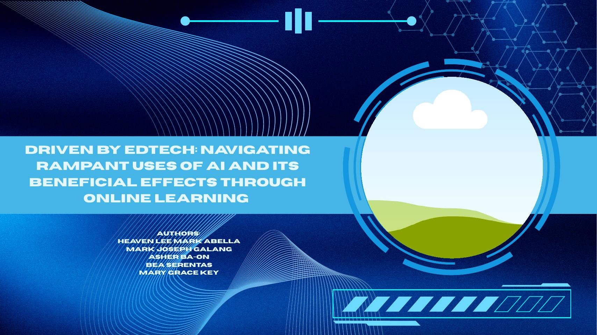
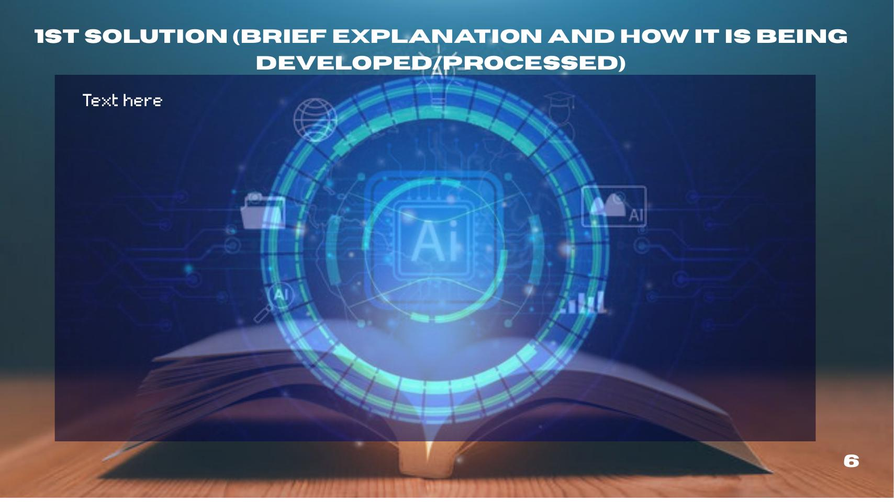
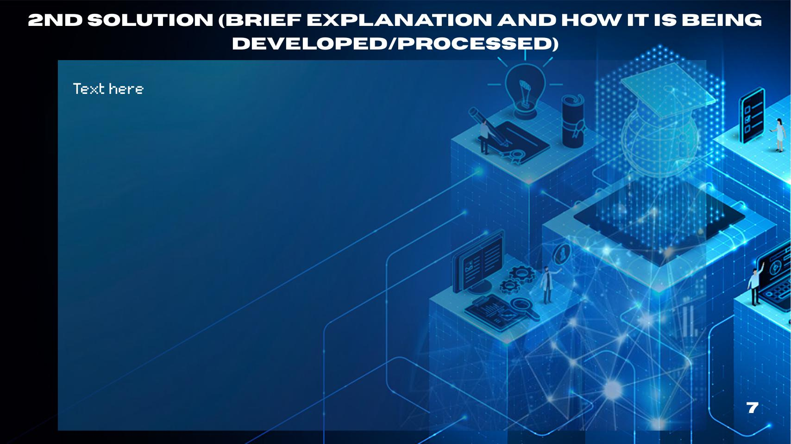
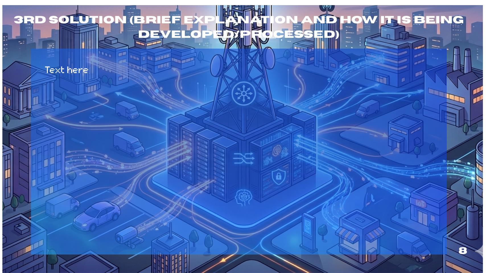

Project AGAP.AI & DepEd AI Programs
Presidential Communications Office (2026); DepEd Region VIII RM No. 250, s. 2026; DepEd Order No. 003, s. 2026 – Foundational Guidelines on AI in Basic Education.

How AI can support, not replace, Filipino learners. A solution evaluation on AI-supported EdTech in Philippine basic education.
Explore the SynthesisRampant AI use in education creates both opportunity and vulnerability—especially for Filipino learners.
Introduction: Globalization today is driven by rapid advances in technology, digital connectivity, and artificial intelligence. These breakthroughs let knowledge, tools, and innovations cross borders instantly, linking classrooms in developing nations like the Philippines with advanced learning environments in Singapore, South Korea, Japan, and the United States. This interconnectedness has fueled the rise of Educational Technology (EdTech), the systematic integration of digital software and AI tools into learning systems worldwide. Adapting to these technologies has become essential for national development.
Educational Technology (EdTech) systematically integrates digital tools and AI into learning. While it can personalize instruction and modernize teaching, rapid unguided adoption creates risks to academic integrity, critical thinking, equity, and teacher–student relationships.
AI-supported technology can improve learning and daily life by increasing productivity, providing accessible support, personalizing learning experiences, and helping users accomplish tasks more efficiently.
Although AI use may present challenges (over-reliance, limited digital literacy, unequal access), its benefits can be maximized through responsible and mindful use, making it a valuable technological asset for students and everyday users.
How AI-supported EdTech affects society and why the Philippines faces unique constraints.
AI analyzes information quickly, explains difficult topics, and adapts to individual learning needs—making study more efficient when used as a guide, not a substitute for effort.
Tools such as DepEd’s SIGLA can save tens of thousands of teacher-hours on administrative tasks, freeing time for teaching and student interaction.
Countries with strong infrastructure (Singapore, South Korea, Japan, US) integrate EdTech more effectively. The Philippines still faces connectivity, cost, and device gaps.
Technostress, digital fatigue, reduced face-to-face interaction, and possible erosion of critical thinking if AI replaces rather than supports student effort.
Unreliable internet, high data costs, limited devices, and urban–rural inequality mean many Filipino students cannot yet benefit equally from AI tools.
Project AGAP.AI, AI Ready ASEAN, and the National Digital Connectivity Plan show government commitment—but success depends on access, training, and ethics.
Who supports AI integration, who raises concerns, and where their interests meet.
Actively promote AI integration through Project AGAP.AI and AI Ready ASEAN. View AI as a way to modernize teaching, build digital skills, and prepare students for a technology-driven future—while emphasizing that AI should support, not replace, teachers.
The National Digital Connectivity Plan (NDCP) targets 100% connectivity in public schools, 130,000 Free Wi-Fi sites, and lower internet costs—treating connectivity as essential national development infrastructure.
Concerns include job displacement fears, algorithmic bias, high implementation costs, academic integrity, and whether AI will weaken students’ critical thinking. Attitudes are not uniform; urban teachers often show greater skepticism on ethics and access.
Worry about over-reliance, data privacy, and unequal access that could leave rural and low-income learners behind. Support digital literacy in principle but want clear safeguards and teacher guidance.
Philippine media and official statements largely present AI and digital connectivity as symbols of progress and national readiness. Project AGAP.AI and the NDCP (“Digital Bayanihan”) receive positive coverage. Less airtime is given to teacher workload, academic integrity, and rural access gaps—concerns our group still treats as central.
AGAP.AI · AI Literacy & Policy Training · Expansion of Digital Access and Infrastructure

Accelerating Governance and Adaptive Pedagogy through Artificial Intelligence — a DepEd-led initiative launched by President Marcos Jr. on 9 January 2026 at Quezon City Science High School.
It integrates AI into basic education by training teachers, students, and parents; introducing AI-powered tools (e.g., SIGLA for nutritional assessment); and promoting ethical, human-centered use so AI supports rather than replaces educators.
Reach: By February 2026, nearly 796,000 Filipinos had completed basic AI literacy training under the AI Ready ASEAN program. SIGLA is estimated to save ~60,000 teacher-hours per year for about 34,000 teachers.

Structured training modules, curriculum integration, and clear ethical guidelines so students and teachers use AI responsibly. Implemented through DepEd regional hubs (e.g., Leyte Normal University), AI Ready ASEAN, and alignment with UNESCO frameworks and Singapore’s teacher-first model.
Best practices include risk-based safeguards (restrict high-risk uses), teacher-first training, academic-integrity policies (verify work, adjust assessments), data-privacy rules, and continuous capacity building for teachers, students, and parents.

The National Digital Connectivity Plan (NDCP), approved January 2026 under “Digital Bayanihan,” aims for fast, reliable, affordable internet for every Filipino by 2028.
Targets: 100% connectivity in public schools, barangays, and health centers; 130,000 Free Wi-Fi sites; 40–80% reduction in internet costs; expansion of the National Fiber Backbone, submarine cables, and satellite systems. Complements device access, offline materials, and teacher digital training.
Without reliable connectivity, devices, and electricity, AI tools and literacy programs cannot reach rural and low-income learners.
Expansion of Digital Access and Infrastructure ranked first (overall score 3.68)
After evaluating the three solutions against five criteria (Effectiveness, Feasibility, Sustainability, Accessibility & Inclusivity, Global Impact), the group selected Expansion of Digital Access and Infrastructure as the most plausible and foundational solution.
| Solution | Effectiveness | Feasibility | Sustainability | Accessibility & Inclusivity | Global Impact | Overall | Rank |
|---|---|---|---|---|---|---|---|
| AGAP.AI | 3.80 | 3.40 | 3.40 | 2.60 | 4.00 | 3.44 | 3rd |
| AI Literacy & Policy Training | 3.80 | 3.40 | 3.40 | 3.20 | 4.00 | 3.56 | 2nd |
| Expansion of Digital Access & Infrastructure | 3.80 | 2.80 | 4.00 | 3.80 | 4.00 | 3.68 | 1st |
Scores are averages of five group raters using the class rubric (1 = Minimally Evident → 4 = Highly Evident).
How we know the chosen solution is working, and what each stakeholder must do.
Lead NDCP implementation: National Fiber Backbone, Free Wi-Fi, last-mile connectivity, coordination with telcos.
Identify priority schools (especially GIDA areas), align infrastructure with AGAP.AI readiness, support device and offline-content programs.
Provide sites, permits, local coordination; build and operate networks and Free Wi-Fi under public–private partnerships.
Secure sustained appropriations and supportive legislation for broadband and digital equity.
Manage equipment, report needs, use connectivity for teaching and learning, support device care and digital safety.
Policy foundations and practical obstacles to equitable digital access.
Prioritize underserved and GIDA schools; stage infrastructure so the neediest communities gain access first.
Downloadable materials, offline-capable platforms, and backup power options for areas with intermittent connectivity.
Device-lending programs, shared school equipment, and regular maintenance and replacement budgets.
Clear inter-agency roles, cybersecurity practices, privacy safeguards, and continuous monitoring of usage and outcomes.
AI is no longer optional in education—86% of students already use it. The central challenge is that adoption is outpacing preparation: literacy, ethics, and equitable access.
Expand digital access and connectivity so every Filipino learner can participate. Without reliable internet and devices, AGAP.AI and literacy programs cannot deliver equitable benefits.
Continue and scale AI Ready ASEAN and DepEd guidelines so teachers and students use AI critically, protect academic integrity, and keep human judgment central.
AI must support—not replace—teachers and students. Preserve Filipino values and teacher agency while modernizing pedagogy.
DepEd, DICT, LGUs, telcos, Congress, schools, and communities must keep implementing and monitoring NDCP, AGAP.AI, and related policies together.
Through collective action on infrastructure, literacy, and responsible use, the challenges of rampant AI adoption can become lasting opportunities for an effective, ethical, and inclusive learning system for every Filipino student.
Presidential Communications Office (2026); DepEd Region VIII RM No. 250, s. 2026; DepEd Order No. 003, s. 2026 – Foundational Guidelines on AI in Basic Education.
Department of Information and Communications Technology (2026). National roadmap to a digitally connected Philippines; ED Council approval, January 2026.
Rong, H., & Chun, C. (2024). 86% of students use AI in studies; strong demand for AI literacy training.
75% of lower-secondary teachers in Singapore use AI in their work vs. 36% OECD average—illustrating mature system-wide integration with training.
Advantages/disadvantages of AI in education; pedagogical implications; Guidance for generative AI in education and research.
Philippine News Agency, Inquirer, DepEd and DICT press releases on AGAP.AI launch, AI Ready ASEAN training completions, and NDCP targets.
Synthesis prepared by H1101 Group 7, Mapúa-Malayan Digital College, First Term AY 2025–2026. Content is for educational purposes under the course intellectual-property notice.